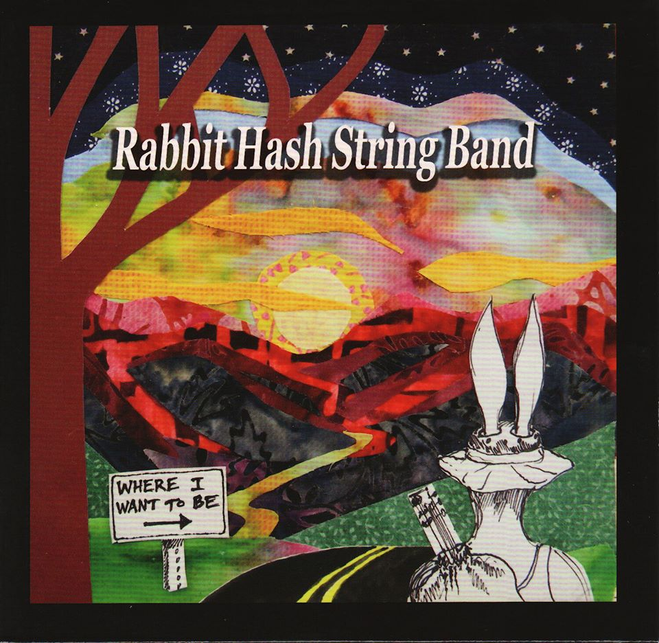
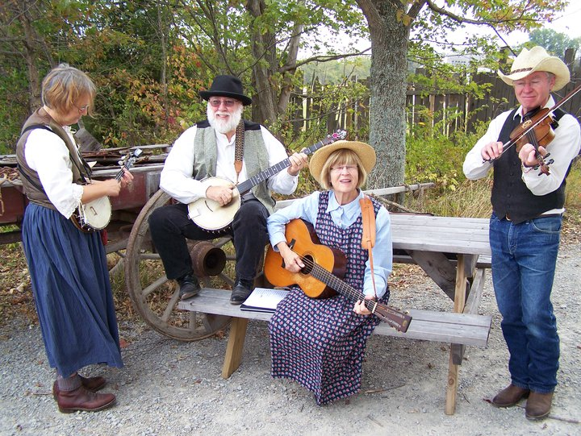

Where I Want To Be
 Cover art by Emily Robin Shade, 2012
Rabbit Hash String Band
RABBIT HASH STRING BAND formed in the early 1990s on the banks of the Ohio River in the sleepy river town of Rabbit Hash, Kentucky. Old-time fiddler and Rabbit Hash resident Tom Taylor pulled together Warren and Judy Waldron with Russ and Barb Childers to play Skillet Lickers music of the 1920s. Today the foursome – Warren (fiddle), Judy (guitar), Russ (banjo), and Barb (banjo uke) – “play it forward” to a new generation of listeners.
CD Track Selection
-
Soldier’s Joy - Key of D. Warren sings the most widespread and oldest of old time tunes. It’s been around the English-speaking world since the 18th century, popular in both Revolutionary and Civil Wars. Tim McKenzie plays guitar with us on this track that we recorded for his Windsor Knotts Forgotten… But Not Gone CD in 2011.
-
High on the Mountain (written by Ola Belle Reed) - Key of A. Barb, lead vocal; Judy, harmony. This track is our previously recorded cover of the Ola Belle Reed classic for the Music for the Mountains compilation CD and benefit concert in 2011 as part of a project to raise awareness about the process of mountaintop removal. Copies of the Music for the Mountains CD are available for sale online from Ohio Citizen Action @ www.ohiocitizen.org and Kentuckians for the Commonwealth @ www.kftc.org. In a 1976 interview published by Smithsonian Folkways, Ola Belle Reed said about this song “you cannot separate your lifestyle, your religion, your politics from your music.”
-
Cotton Eyed Joe - Key of G. Warren, lead vocal; Judy and Barb, harmony. “Where’d you come from, where’d you go?” We’ve seen many meanings for the term “cotton-eyed” including blindness from glaucoma or syphilis or blind-drunk from moonshine. This here’s a Carter Brothers-inspired rollicking song about an unrepentant reprobate.
-
Rabbit Hash Kentucky (written by Tom Taylor) - Key of D. Warren, lead vocal; Judy, Barb, and Russ harmonies. Tom Taylor created this tribute to the real life characters of his hometown on the banks of the Ohio River. The song (and Tom, along with our band) was later featured in the 2004 documentary Rabbit Hash - Center of the Universe. Though Tom no longer plays with the band, his legendary jokes and one-liners remain an indelible part of the band’s repertoire.
-
Polly Put the Kettle On - Key of D. Our musical heroes, the Skillet Lickers of north Georgia sang “Molly put the kettle on, Jenny blow the dinner horn, Molly put the kettle on, we’ll all take tea.” Even without words, this tune boils up a good head of steam just right for dancing.
-
Rabbit in the Lowland - Key of A. Warren, lead vocal; Judy, Barb, and Russ, harmonies. Always on the hunt of a good rabbit tune, we tried to capture Brad Lefwich’s interpretation of a George “Shortbuckle” Roarke field recording.
-
Old Lonesome Blues - Key of C. Barb, lead vocal, and Judy, harmony, attempt to channel the Bowman Sisters, Jenny (14) and her older sister Pauline (16), who recorded this sassy song in 1929. Their dad was old-time fiddler Charlie Bowman. We like how Warren “shivers” the fiddle.
-
Run Mountain - Key of G. Warren, lead vocal; Judy, Barb, Russ, harmonies. Don’t blame us. J. E. Mainer and his Mountaineers made us do it, but Tim Wilson’s version still inspires those of us who remember Company Comin’s premier fiddler. Run or Roan Mountain? Chug, check, or chuck a little hill? We don’t know. When in doubt, sing louder.
-
Sittin’ by the River on the Levee - Key of A. Warren, lead vocal; Judy, Barb, Russ, harmonies. We credit Jeff Warner and Jeff Davis as well as the Double Decker String Band for this a capella work song collected in 1939 by Herbert Halpert from Josephine Douglas at the Parchman Women’s Correctional Farm in Mississippi.
-
Hard Road to Travel - Key of D. We think we all learned this from Jack Bunch in Cincinnati jam sessions during the 1970s.
-
Raccoon on the Rail - Key of G. Barb, lead vocal. Barb found words to what was probably an 19th century minstrel piece “Settin’ on a Rail” in an old children’s book Negro Folk Songs. She recognized the melody as the old-time fiddle chewn “Possum on a Rail.” Everybody shout encore!
-
Tennessee Mountain Fox Chase - Key of C. Imagine a mountain. Imagine a moonlit night. Imagine baying hounds chasing a frantic fox. Warren and Russ shake the fox and hounds right outta that tune while Judy and Barb just try to keep up. Warren says his version come from the playing of Dudley Vance of Vance’s Tennessee Breakdowners.
-
Sail Away Ladies - Key of G. Warren, lead vocal; Judy, Barb, Russ, harmonies. This song was present in white and black traditions from the time between the Revolutionary and Civil Wars. It’s not hard to imagine that crews on steamboats helped pass this song up and down the Ohio and Mississippi Rivers. We like to think the ladies of the song refer to the highly ornamented steamboats: “Don’t you rock ‘em!” Warren’s source for this one is Uncle Dave Macon and the Fruit Jar Drinkers.
-
Sugar Babe - Key of A. Barb, lead vocal; Judy, harmony. Interpret the double meaning of the lyrics however you like! We take our singing cues for this mournful modal tune from many sources, one of them being Norman Edmonds and the Old Timers.
-
Georgia Wagoner - Key of C. Back in the day, a wagoner hauled freight on a mule-drawn wagon. Another instrumental from the Skillet Lickers’ repertoire, just right for Judy or Russ to call a square dance. Swing your partners!
-
Sandy River Belle - Key of G. Russ and Warren fire up two different versions of the same tune and get that ol’ steamboat moving along. Russ learned the banjo part from Elmer Bird of Hurricane, West Virginia. Warren’s fiddle part come from listening to an unnamed fiddler on a live radio broadcast. Their syncopated rhythms help us see a paddlewheel churning up the waters as it fades off into the misty distance.
All songs traditional, except sel. 2 and 4.
Where I Want To Be recorded and produced by Rabbit Hash String Band, 2011-13
 Photo by Jerry Linger, 2010